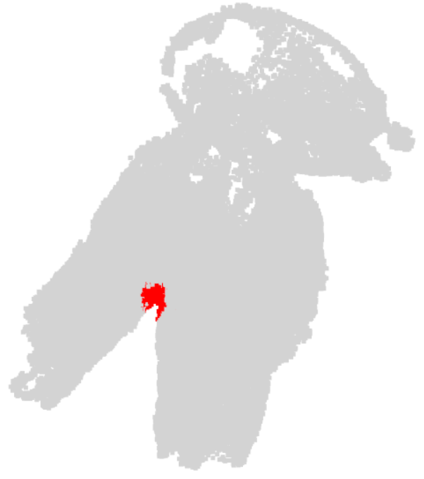
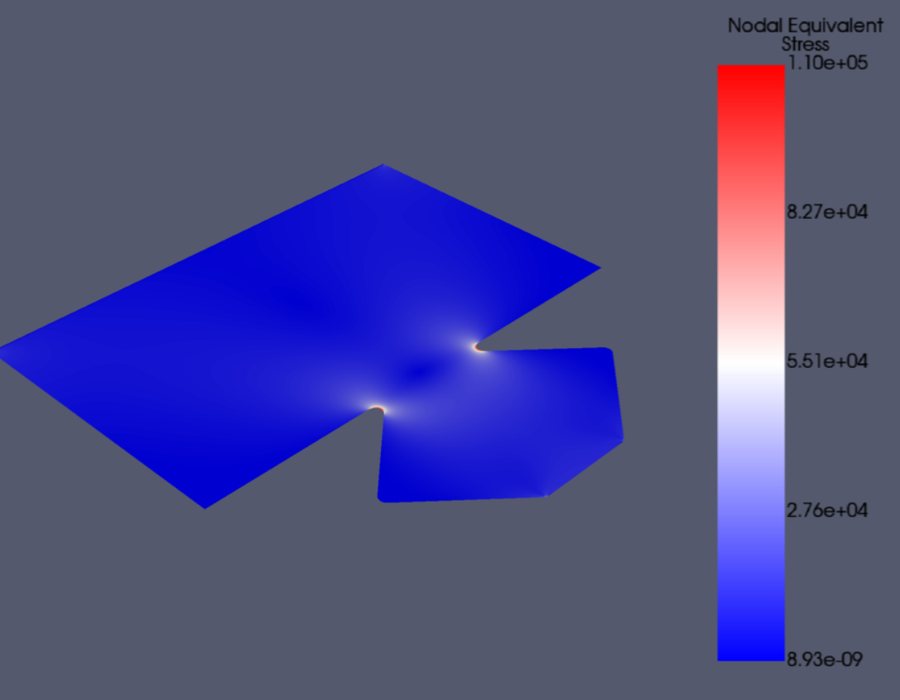
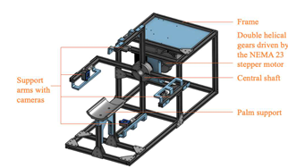
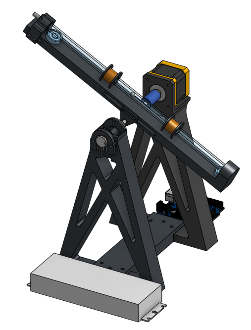
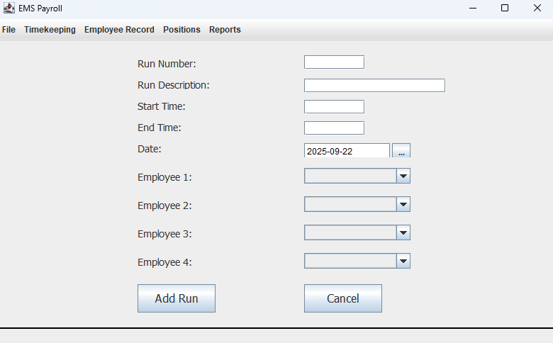
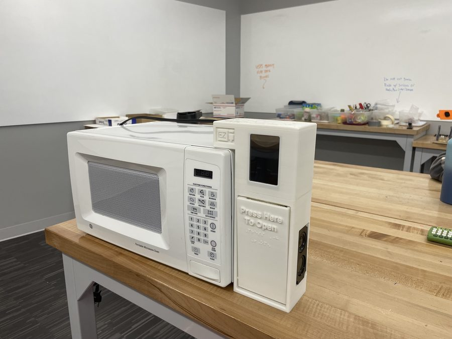

Mechanical Engineering & Computer Science • Robotics • Hardware and Software Integration
I’m a senior Mechanical Engineering student with a Computer Science minor and a robotics concentration at Ohio Northern University, graduating in May 2027. Most of what I work on lives in the space between hardware and software — designing and building a physical system, then writing the code that makes it useful. In practice that has meant imaging rigs, custom instrumentation, machine learning models, and simulation tools, often on the same project.
This past summer I was an Evans Research Fellow working full time on a surgical planning system for syndactyly, a condition in which a child’s fingers are joined by skin and soft tissue. The project takes a patient’s hand from a set of ordinary photographs to a full three-dimensional model, identifies the anatomy that matters, and simulates how a proposed operation will behave. I have worked on it since early 2024 and continue to, alongside coursework.
This fall I begin work as an Ohio Space Grant Consortium STEM Scholar, designing compact exercise equipment for astronauts on long-duration missions where there is very little room to spare. I graduate in May 2027 and am looking for full-time roles starting after that.

- Trained a deep learning model to automatically locate the web space between fingers in three-dimensional hand scans, reaching a mean intersection-over-union of 0.774 under five-fold cross-validation — that is, the model’s prediction overlaps hand-labeled ground truth by roughly 77 percent on scans it was never trained on, measured across five independent splits of the data.
- Built the entire supporting toolchain from scratch, including a point cloud labeling application, the annotated training dataset, and the cross-validation setup used to measure how well the model performs on hands it has never seen before.
- The model is now accurate enough to feed the simulation stage directly, removing a manual labeling bottleneck that previously required marking every scan by hand before analysis could begin.

- Wrote a simulation pipeline that runs finite element analysis on surgical flap geometry automatically, so a new patient’s anatomy can be evaluated without rebuilding the model by hand each time.
- Drove the model directly from scanned patient geometry rather than an idealized shape, so the simulation reflects the specific hand being operated on instead of a generic approximation.
- Confirmed through a convergence study that the results are independent of how finely the model is divided, so the output reflects the underlying physics rather than an artifact of the setup.

- Led the programming team responsible for the wiring and control software of a prototype three-dimensional scanner assembled from off-the-shelf cameras and a stepper motor.
- Wrote the embedded control code that rotates the subject through a full revolution while several cameras capture synchronized images at each position.
- Reconstructed a complete three-dimensional model from the resulting photographs, reaching scan quality comparable to commercial systems costing many times more.

- Designed and built a viscosity measuring instrument end to end, covering the mechanical design, the sensing circuit, and the embedded firmware that ties them together.
- Developed a custom ring-down detection circuit capable of tracking a metal element precisely enough to derive viscosity from how it moves through a fluid.
- Reduced measurement turnaround in a production environment from roughly seven days to under an hour, which allowed process decisions to be made the same day instead of the following week.

- Rebuilt a local emergency medical services department’s payroll system from the ground up, replacing legacy software that was no longer supported or practical to maintain.
- Rewrote the application in Java so that it will continue to run on current systems, and designed the interface around how the department actually records runs and hours rather than around the old software’s structure.
- Implemented a database backend to hold personnel, position, and timekeeping records while keeping everyday data entry fast for users who are not technical.

- Built a custom control interface that allows children with developmental disabilities to operate a standard microwave on their own.
- Handled all of the circuit design and programming required for a microcontroller to communicate with the microwave’s existing control board.
- Added computer vision software that reads a printed food identification card and sets the matching cook time automatically, removing the need to enter numbers on a keypad.
Syndactyly is a condition in which a child’s fingers are joined by skin and soft tissue, and it is corrected surgically in early childhood. This project builds a complete pipeline that reconstructs a patient’s hand in three dimensions from ordinary photographs, identifies the relevant anatomy automatically, and simulates how a proposed surgical flap will behave once it is closed. The aim is to give surgeons a way to evaluate and compare plans beforehand rather than making those judgments in the operating room.
Built a finite element model of the fingernail assembly to simulate loading on it, ran a convergence study to verify the results were independent of mesh density, and analyzed how stress distributes layer by layer through the structure. The findings were accepted for publication at ASME IMECE 2026.
Astronauts on long missions lose bone density and muscle mass without regular resistance exercise, but the vehicles being designed for deep-space travel have very little space to give up. This project designs compact, instrumented exercise equipment intended for small crew vehicles, funded through a NASA-affiliated award from the Ohio Space Grant Consortium and the Ohio Department of Higher Education.
For the full printable version, use the button in the header or open it here.
Email: cartermbetts@gmail.com
LinkedIn: linkedin.com/in/carter-betts
Phone: (330) 421-3080
I like hard problems where hardware and software have to work together, and I care most about the ones where the result ends up doing something for a person on the other end. I’m graduating in May 2027 and looking for full-time work. If you build in robotics, medical devices, or three-dimensional perception, I’d be glad to talk.